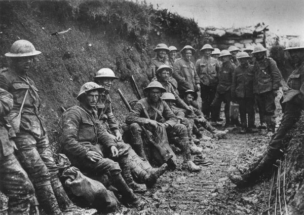
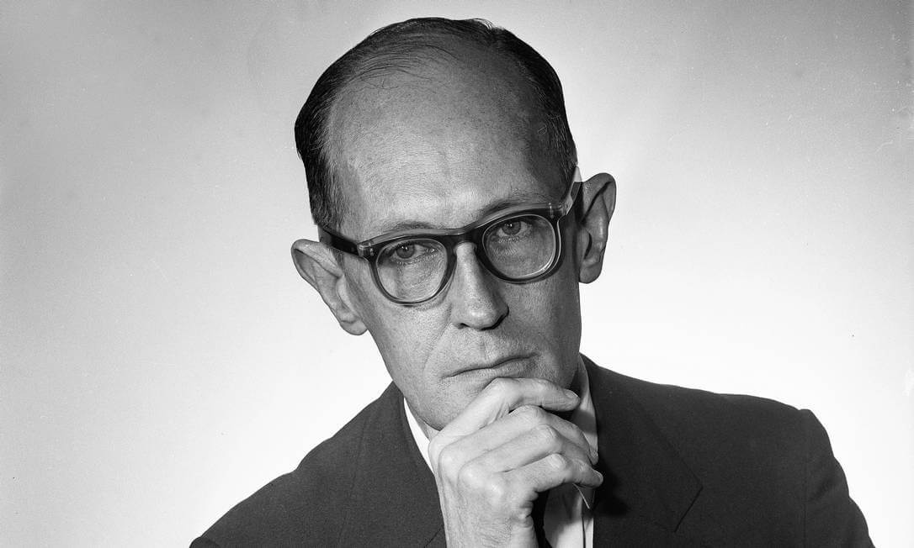

Contexto histórico
Podemos afirmar com toda certeza que o período em que se deu o modernismo foi muito mais conturbado do que o anterior. Na Europa, inicia-se a Primeira Guerra Mundial, causada por uma corrida armamentista e nacionalismo exacerbado, o que permitiu avanços científicos e destruição inigualável.
Chegado o fim da guerra no ano de 1918, o cenário pós-guerra deu força a movimentos extremistas e nacionalistas de extrema-direita como o fascismo e nazismo, colocando Hitler no poder. Resultado de todo ressentimento alemão, inicia em 1939 o conflito da Segunda Guerra Mundial que se estende até 1945, onde agora protagoniza um conflito ideológico denominado guerra fria, dividindo o mundo em 2 partes.
Voltando ao Brasil, em 1920, o que conhecemos como República Velha entrou em colapso provocado pelos movimentos tenentistas. Alguns anos depois, Getúlio Vargas toma o poder do país dando início a uma era de ditaduras e perseguições a artistas. Todos os acontecimentos influenciaram diretamente os artistas e no Brasil, dividiu o movimento em três gerações.

Características do modernismo
O que se conhece como Modernismo se deve à vontade de ruptura com a arte tradicional, trazida pelas vanguardas europeias. Sendo assim, as obras modernistas têm total liberdade e seu único limite é a criatividade, trazendo inovação. Resumindo, podemos citar as características do modernismo como:
• Oposição à arte tradicional e as academias
• Liberdade para obras
• Busca de inovação artística
• Linguagem popular
• Temas sociopolíticos
• Vontade de experimentar
Gerações modernistas
Primeira geração modernista
A primeira geração se iniciou em 1922, tendo como marco inicial a Semana de Arte Moderna. Durante esse período, as obras têm caráter mais radical, uma vez que é a linha de frente na quebra da tradição artística tradicional, trazendo consigo o nacionalismo crítico. Ela perdurou até 1930.
Segunda geração modernista
Começa em 1930 e acontece durante a Era Vargas, perdurando até 1945, fazendo com que a poesia tenha como principal assunto a sociopolítica. A prosa, diferentemente, tinha suas obras com viés regionalista e realista, retratando e criticando os problemas sociais.
Terceira geração modernista
Se inicia em 1945, também conhecida como pós-modernismo, tem a poesia valorizando a formalidade, se preocupando com a estrutura, focando em temas sociais e políticos.
Autores e obras
Carlos Drummond de Andrade
Carlos Drummond de Andrade nasceu no município de de Itabira, em Minas Gerais, no ano de 1902. Cresceu em uma fazenda e, se interessando pela literatura, entrou no Colégio em Belo Horizonte. Dedicou-se à escrita, formou-se em Farmácia, porém nunca exerceu a profissão.

O autor escreveu diversos poemas, e dentre eles, um de seus mais famosos, nomeado “No meio do caminho”:
Tinha uma pedra no meio do caminho
Tinha uma pedra
No meio do caminho tinha uma pedra.
Nunca me esquecerei desse acontecimento
Na vida de minhas retinas tão fatigadas.
Nunca me esquecerei que no meio do caminho
Tinha uma pedra
Tinha uma pedra no meio do caminho
No meio do caminho tinha uma pedra.”